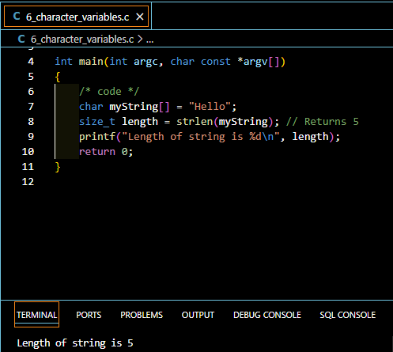

Introduction to Character Variables in C
Character variables are fundamental building blocks in C programming, serving as the foundation for text processing and string manipulation. For beginner C programmers, understanding how to work with character variables is crucial for developing robust and efficient programs.
What are character variables?
Character variables in C are used to store single characters, such as letters, digits, or symbols. They are typically declared using the char data type and occupy 1 byte of memory.
Importance of character variables in C programming
Character variables play a vital role in C programming, as they form the basis for creating and manipulating strings, which are essential for tasks such as user input/output, file handling, and text processing.
Basics of Strings in C
Before diving into the specifics of character variables, it’s important to understand the concept of strings in C.
Definition of strings in C
In C, a string is defined as a one-dimensional array of characters, terminated by a null character (‘\0’). This null-terminated sequence of characters is how C represents text data.
How strings are stored in memory
Strings in C are stored as contiguous blocks of memory, with each character occupying one byte. The last byte is reserved for the null terminator, which marks the end of the string.
Let’s see how the word crazy is stored in memory:
| 0 | 1 | 2 | 3 | 4 | 5 |
| c | r | a | z | y | \0 |
The concept of null-terminated strings
The null terminator is a crucial aspect of C strings. It’s represented by ‘\0’ and serves as a marker to indicate the end of the string. This allows functions to process strings without needing to know their exact length in advance.
Understanding the String Terminator
The role of the null character (‘\0’)
The null character, represented as ‘\0’, plays a critical role in C strings. It serves as the string terminator, indicating where the string ends in memory.
Why string termination is crucial
Proper string termination is essential for many reasons:
- It allows string functions to know where the string ends
- It prevents buffer overflows and other memory-related issues
- It ensures consistent behavior across different C functions and libraries
Common mistakes with string terminators
Beginners often make mistakes related to string terminators, such as: - Forgetting to allocate space for the null terminator - Overwriting the null terminator accidentally - Confusing ‘0’ (the character zero) with ‘\0’ (the null terminator)
Using Character Arrays in C
Character arrays are the primary way to work with strings in C.
Declaring character arrays
To declare a character array in C, you can use the following syntax:
char myString[50];This declares an array that can hold up to 49 characters plus the null terminator.
Initializing character arrays
Character arrays can be initialized in several ways:
char str1[] = "Hello";
char str2[6] = {'H', 'e', 'l', 'l', 'o', '\0'};
char str3[6] = "Hello";Accessing individual characters in an array
You can access individual characters in a string using array indexing:
char myString[] = "Hello";
char firstChar = myString[0]; // 'H'
char lastChar = myString[4]; // 'o'Initializing Strings in C
Different methods of string initialization
Strings can be initialized using various methods: - Array initialization - Pointer initialization - Using string literals
Array initialization vs. pointer initialization
Array initialization:
char str[] = "Hello";Pointer initialization:
char *str = "Hello";The key difference is that array initialization creates a mutable string, while pointer initialization creates an immutable string literal.
Best practices for string initialization
- Always ensure enough space is allocated for the null terminator
- Use array initialization for strings that need to be modified
- Use const char* for string literals that shouldn’t be modified
Determining the Length of Strings
The strlen() function
The strlen() function from the <string.h> library is commonly used to determine the length of a string:
#include <string.h>
char myString[] = "Hello";
size_t length = strlen(myString); // Returns 5Manual methods to calculate string length
You can also manually calculate the length of a string:
int calculateLength(const char *str) {
int length = 0;
while (str[length] != '\0') {
length++;
}
return length;
}Importance of string length in programming
Knowing the length of a string is crucial for: - Allocating memory - Preventing buffer overflows - Performing string manipulations efficiently
Listing Characters in Strings
Iterating through a string
You can iterate through a string using a loop:
char myString[] = "Hello";
for (int i = 0; myString[i] != '\0'; i++) {
printf("%c", myString[i]);
}Printing individual characters
To print individual characters, you can use the %c format specifier with printf():
char myString[] = "Hello";
printf("First character: %c\n", myString[0]);Modifying characters within a string
You can modify individual characters in a mutable string:
char myString[] = "Hello";
myString[0] = 'J';
printf("%s\n", myString); // Prints "Jello"Common String Operations in C
Concatenation
String concatenation can be performed using the strcat() function:
#include <string.h>
char str1[20] = "Hello ";
char str2[] = "World";
strcat(str1, str2);
printf("%s\n", str1); // Prints "Hello World"Comparison
String comparison is typically done using the strcmp() function:
#include <string.h>
char str1[] = "apple";
char str2[] = "banana";
int result = strcmp(str1, str2);
if (result < 0) {
printf("str1 comes before str2\n");
} else if (result > 0) {
printf("str2 comes before str1\n");
} else {
printf("str1 and str2 are equal\n");
}Copying
To copy strings, you can use the strcpy() function:
#include <string.h>
char source[] = "Hello";
char destination[20];
strcpy(destination, source);
printf("%s\n", destination); // Prints "Hello"String Input and Output in C
Using scanf() for string input
The scanf() function can be used for string input, but it has limitations:
char name[50];
printf("Enter your name: ");
scanf("%s", name);
printf("Hello, %s!\n", name);Note that scanf() stops reading at the first whitespace character.
Using gets() and its limitations
The gets() function can read a whole line of input, but it’s considered unsafe due to potential buffer overflows:
char input[100];
gets(input); // Unsafe, avoid using thisSafer alternatives for string input
A safer alternative is to use fgets():
char input[100];
fgets(input, sizeof(input), stdin);String Manipulation Functions
Overview of <string.h> library
The <string.h> library provides various functions for string manipulation, including strlen(), strcpy(), strcat(), and strcmp().
Key string manipulation functions
Some important string functions include: - strncpy(): Copy a specified number of characters - strncat(): Concatenate a specified number of characters - strncmp(): Compare a specified number of characters - strchr(): Find a character in a string - strstr(): Find a substring within a string
When to use built-in functions vs. custom implementations
Use built-in functions when: - Performance is critical - The function exactly matches your needs - You want to ensure compatibility and maintainability
Implement custom functions when: - You need specialized behavior not provided by standard functions - You’re learning and want to understand the underlying concepts - You need to optimize for a specific use case
Character Arrays vs. String Literals
Differences between mutable and immutable strings
Character arrays are mutable, meaning their contents can be changed:
char mutableString[] = "Hello";
mutableString[0] = 'J'; // ValidString literals are immutable and should not be modified:
char *immutableString = "Hello";
immutableString[0] = 'J'; // Undefined behavior, may cause a crashWhen to use each approach
Use character arrays when:
- You need to modify the string contents
- You’re working with user input or dynamic data
Use string literals when:
- You have fixed, constant strings in your program
- You want to save memory by reusing the same string multiple times
Common Pitfalls and How to Avoid Them
Buffer overflows
Buffer overflows occur when writing beyond the allocated memory. Always ensure sufficient space is allocated and use bounds-checking functions like strncpy() instead of strcpy().
Forgetting the null terminator
Always allocate space for and include the null terminator when working with strings. Forgetting it can lead to undefined behavior and hard-to-debug issues.
Improper string comparisons
Use strcmp() for string comparisons instead of the == operator, which compares memory addresses, not string contents.
Best Practices for Working with Strings in C
Ensuring proper memory allocation
Always allocate enough memory for your strings, including space for the null terminator. When using dynamic allocation, remember to free the memory when it’s no longer needed.
Validating input
Always validate and sanitize user input to prevent buffer overflows and other security vulnerabilities.
Using secure string functions
Prefer safer alternatives like strncpy(), strncat(), and snprintf() over their less secure counterparts.
Advanced Topics in C Strings
Multi-dimensional character arrays
Multi-dimensional character arrays can be used to store multiple strings:
char names[3][20] = {"John", "Jane", "Alice"};Dynamic memory allocation for strings
You can use malloc() to allocate memory for strings dynamically:
char *dynamicString = (char *)malloc(50 * sizeof(char));
if (dynamicString != NULL) {
strcpy(dynamicString, "Hello, dynamic world!");
// Use the string...
free(dynamicString); // Don't forget to free the memory
}Wide character strings
For Unicode support, C provides wide character strings using the wchar_t type:
#include <wchar.h>
wchar_t wideString[] = L"Wide character string";Conclusion
Recap of key concepts
In this comprehensive guide, we’ve covered the essentials of character variables in C, including string terminators, character arrays, string initialization, length determination, and common string operations. We’ve also discussed best practices and common pitfalls to avoid.
Next steps in mastering C programming
To further your C programming skills: - Practice working with strings in various scenarios - Explore more advanced string manipulation techniques - Study standard library functions in depth - Work on projects that involve text processing and file I/O
By mastering character variables and strings, you’ll have a solid foundation for tackling more complex C programming challenges.
Practicle Example
Here is a small practicle example of how to use the concepts discussed above:
#include <stdio.h>
#include <string.h>
// Example program modified from Chapter 6 of
// Absolute Beginner's Guide to C, 3rd Edition
main() {
// Child1 Can hold 6 characters and a null terminator
char Child1[7];
char Child2[] = "Steven";
char Child3[7] = "Johnny";
char Hero1[7] = "Batman";
char Hero2[34] = "Superman";
char Hero3[25];
Child1[0] = 'A';
Child1[1] = 'l';
Child1[2] = 'e';
Child1[3] = 'x';
Child1[4] = 'i';
Child1[5] = 'a';
Child1[6] = '\0';
strcpy(Hero3, "The Incredible Hulk");
printf("%s\'s favorite hero is %s.\n", Child1, Hero1);
printf("%s\'s favorite hero is %s.\n", Child2, Hero2);
printf("%s\'s favorite hero is %s.\n", Child3, Hero3);
return 0;
}Happy Coding! 🚀
